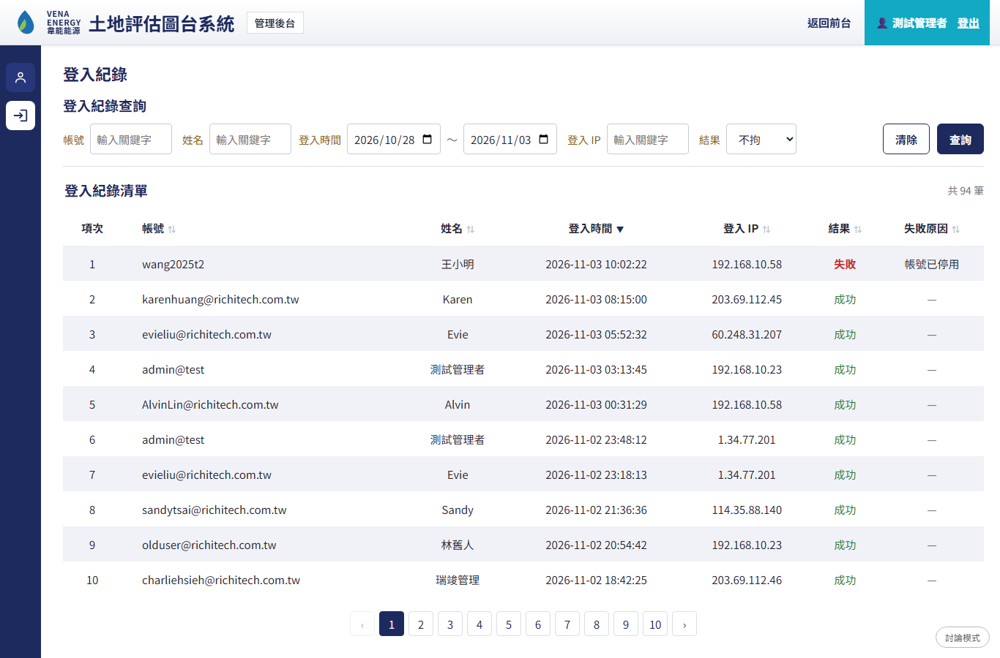
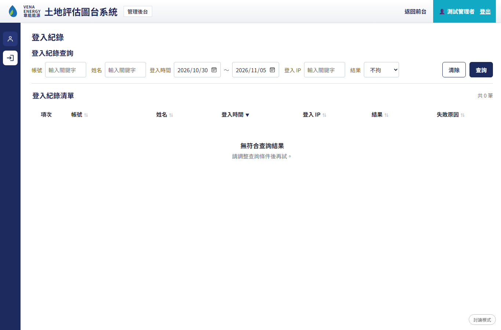

登入紀錄 — 設計交付
土地評估圖台系統・管理後台｜依雛型 v1、規格 v1｜對應合約項次 3.1
本頁是一個資料夾自包含的交付說明，圖都在 圖/。配色、字體、元件樣式沿用現有後台「帳號管理」頁（深藍左側列、青藍使用者標籤、深藍主按鈕、白底藍框次要按鈕、隔行底色表格），不需要新設計一套。
一、要出什麼
| # | 畫面 | 說明 |
|---|
| 1 | 登入紀錄頁（有資料） | 查詢條件列、紀錄表格、分頁 |
| 2 | 登入紀錄頁（無符合查詢結果） | 表格區的空狀態 |
| 3 | 左側選單新增按鈕「登入紀錄」 | 與「帳號管理」按鈕同尺寸，圖示指定使用 Material Icons Outlined 的「login」（24px），不需要另外設計；滑鼠懸停時在按鈕右側顯示深色提示框「登入紀錄」（「帳號管理」按鈕同樣），請一併出圖 |
待設計交付的素材：無。「登入紀錄」按鈕圖示已指定為 Material Icons Outlined「login」，目前頁為白底深藍圖示、一般狀態為深藍底白色圖示，其餘元件沿用現有。

畫面 1：登入紀錄頁（有資料）
- 頁面標題「登入紀錄」；其下「登入紀錄查詢」區：依視窗寬度自動換行：寬度足夠時順序為帳號、姓名、登入時間（起～迄兩個日期，預設填入近 1 週）、登入 IP、結果（下拉），右側「清除」（白底藍框）與「查詢」（深藍）按鈕排成一行；寬度不夠時從「登入時間」之前換行，登入時間、登入 IP、結果與按鈕在第二列（按鈕靠右）。請依此出寬螢幕與窄螢幕兩種版面。
- 分隔線後是「登入紀錄清單」，右上角「共 N 筆」。
- 表格欄位：項次、帳號、姓名、登入時間、登入 IP、結果、失敗原因；除項次外都可排序，欄位標題旁有 ⇅，目前排序欄顯示 ▲／▼。
- 結果：成功為綠字，失敗為紅字粗體。失敗原因只有「帳號已停用」「帳號不存在」兩種，成功者顯示「—」。帳號欄（標題與內容）靠左對齊，其餘欄位置中；帳號欄只顯示帳號本身，不加任何「已刪除」之類的標示。
- 表格下方置中分頁：‹、頁碼、›，目前頁為深藍底。
二、不可以動什麼
- 欄位、按鈕、文案都不可自行增減或改字：
- 查詢條件固定 5 個：帳號、姓名、登入時間、登入 IP、結果；按鈕固定「清除」「查詢」。不要加「匯出」「刪除」或任何編輯類按鈕（紀錄唯讀）。
- 表格欄位固定 7 欄、順序不可調：項次、帳號、姓名、登入時間、登入 IP、結果、失敗原因。
- 登入時間格式固定
yyyy-MM-dd HH:mm:ss（例如 2026-10-29 09:42:17）。
- 登入時間是「起日～迄日」兩個日期欄，不是單一日期，也不含時分；進入頁面時預設填入「今天往前 6 天～今天」；兩個日期欄互相限制：迄日的日曆中早於起日的日期、起日的日曆中晚於迄日的日期要顯示為灰色不可點選（起日可等於迄日）。沒有清除按鈕，日期欄不可為空（被刪成空白會自動變成當天）。請出日曆「灰色不可選」的狀態圖。
- 預設最新在前，分頁每頁 10 筆；不要改成捲動載入。
- 「登入紀錄」按鈕放在「帳號管理」按鈕下方；權限沿用後台既有機制（只有系統管理者能進後台），不需要設計無權限畫面。
- 「結果」「失敗原因」兩欄與結果篩選已確認要做（不追加報價），照圖出即可。
三、非理想狀態也要出圖

無符合查詢結果
| 情境 | 畫面表現 |
|---|
| 查詢後無符合資料 | 表格區置中顯示粗體「無符合查詢結果」＋灰字「請調整查詢條件後再試。」；右上「共 0 筆」；不顯示分頁 |
| 系統尚無任何紀錄 | 同上，灰字同樣是「請調整查詢條件後再試。」 |
欄位驗證錯誤
| 情境 | 畫面表現 |
|---|
| 起日晚於迄日按「查詢」 | 條件列下方出現紅字「登入時間的起日不可晚於迄日」，清單維持原狀；修正後再按查詢，訊息消失 |
此狀態雛型為純文字紅字，請設計出符合現有後台風格的錯誤提示樣式（可出圖也可口頭回覆沿用現有表單錯誤樣式）。